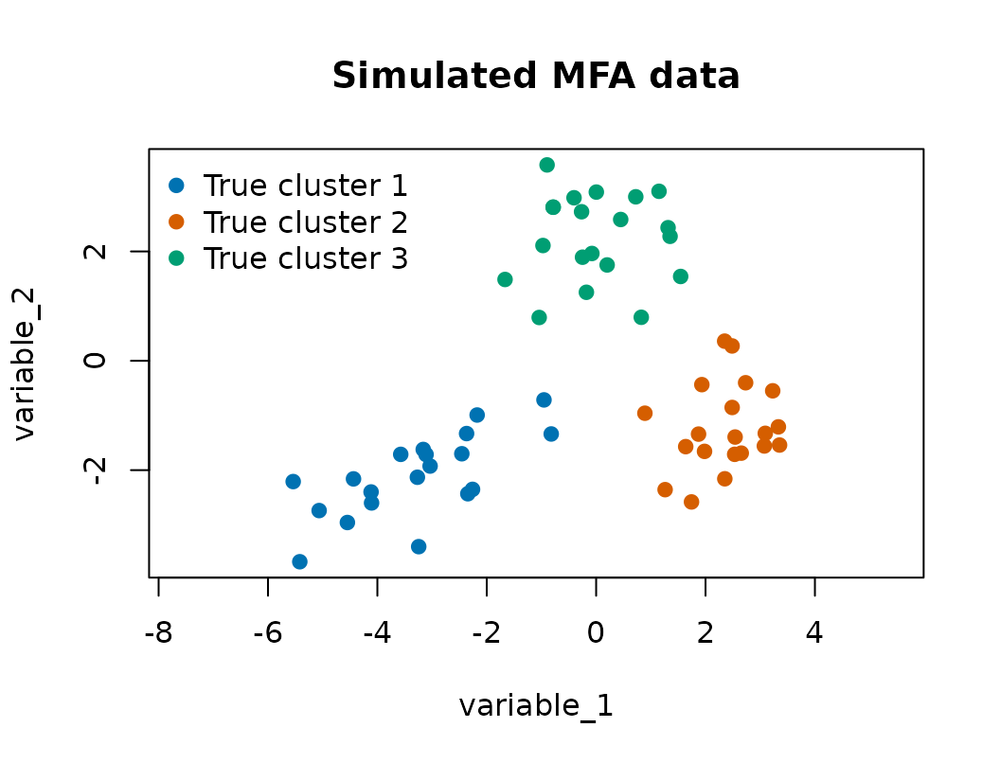
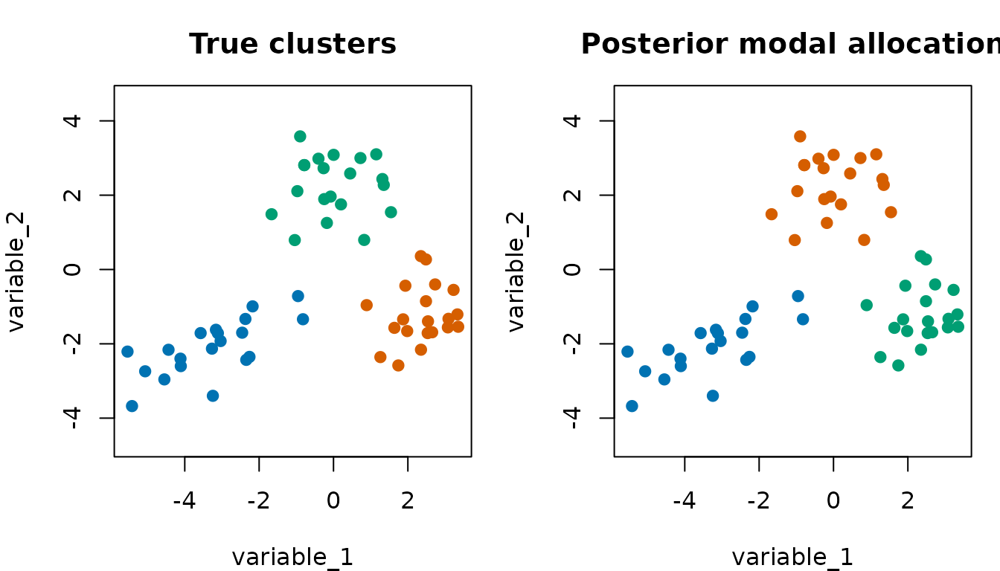

Model selection on a larger simulated MFA data set
Source:vignettes/model-selection.Rmd
model-selection.RmdThis vignette uses a moderately larger simulated
mixture-of-factor-analyzers data set to show the model-selection
workflow in bpgmm. The chain is still short so that the
vignette builds quickly on CRAN and pkgdown. For applied analysis, use
longer burn-in, more posterior samples, multiple chains, and convergence
diagnostics.
Simulate clustered factor-analytic data
The simulator below creates three clusters, six observed variables, and two latent factors. The first three variables carry most of the cluster separation, while the last three variables are intentionally less informative.
library(bpgmm)
#> bpgmm 1.3.0 loaded. If you use bpgmm in published work, please cite it with citation("bpgmm").
simulate_mfa_data <- function(n_per_cluster = 20, p = 6, q = 2) {
means <- rbind(
c(-3.0, -2.0, 0.0, 0, 0, 0),
c( 2.5, -1.0, 2.0, 0, 0, 0),
c( 0.0, 2.5, -2.0, 0, 0, 0)
)
lambdas <- list(
matrix(c(1.2, 0.5, 0.2, 0, 0, 0,
0.0, 0.2, 0.8, 0.3, 0, 0), nrow = p),
matrix(c(0.2, 1.1, 0.6, 0, 0, 0,
0.8, 0.1, 0.2, 0.6, 0, 0), nrow = p),
matrix(c(0.7, -0.4, 1.0, 0, 0, 0,
-0.2, 0.8, 0.4, 0.3, 0, 0), nrow = p)
)
psi <- list(
diag(c(0.25, 0.35, 0.30, 0.80, 0.90, 1.00)),
diag(c(0.30, 0.25, 0.40, 0.80, 0.90, 1.00)),
diag(c(0.35, 0.30, 0.25, 0.80, 0.90, 1.00))
)
n <- n_per_cluster * 3
X <- matrix(NA_real_, nrow = p, ncol = n)
true_cluster <- rep(seq_len(3), each = n_per_cluster)
column <- 1
for (k in seq_len(3)) {
for (i in seq_len(n_per_cluster)) {
latent_score <- rnorm(q)
noise <- MASS::mvrnorm(1, mu = rep(0, p), Sigma = psi[[k]])
X[, column] <- means[k, ] + lambdas[[k]] %*% latent_score + noise
column <- column + 1
}
}
rownames(X) <- paste0("variable_", seq_len(p))
list(X = X, true_cluster = true_cluster)
}
set.seed(2027)
sim <- simulate_mfa_data()
X <- sim$X
true_cluster <- sim$true_cluster
dim(X)
#> [1] 6 60
table(true_cluster)
#> true_cluster
#> 1 2 3
#> 20 20 20The first two variables already show substantial separation, but the model is fit to all six variables.
cluster_cols <- c("#0072B2", "#D55E00", "#009E73", "#CC79A7", "#E69F00")
plot(
X[1, ], X[2, ],
col = cluster_cols[true_cluster],
pch = 19,
xlab = rownames(X)[1],
ylab = rownames(X)[2],
main = "Simulated MFA data",
asp = 1
)
legend(
"topleft",
legend = paste("True cluster", sort(unique(true_cluster))),
col = cluster_cols[sort(unique(true_cluster))],
pch = 19,
bty = "n"
)
Run RJMCMC model selection
Here m_step = 1 allows the sampler to move across
different numbers of clusters, and v_step = 1 allows moves
across the PGMM covariance structures. The example uses only a few
iterations so that the vignette is fast.
fit_log <- capture.output({
fit <- pgmm_rjmcmc(
X = X,
m_init = 3,
m_range = c(1, 5),
q_new = 2,
burn = 2,
niter = 6,
constraint = "UUU",
m_step = 1,
v_step = 1,
split_combine = 0,
verbose = FALSE
)
})
tail(fit_log, 1)
#> character(0)
fit_summary <- summarize_pgmm_rjmcmc(fit, true_cluster = true_cluster)
fit_summary$n_clusters
#>
#> 3
#> 6
fit_summary$n_constraints
#>
#> UCC UCU UUU
#> 1 1 4
fit_summary$ari
#> [1] 0.9495627The model-selection summaries are posterior sample counts. In a real analysis, these bars should be based on a much longer chain.
old_par <- par(mfrow = c(1, 2), mar = c(5, 4, 3, 1))
barplot(
fit_summary$n_clusters,
col = "#56B4E9",
border = NA,
xlab = "Number of clusters",
ylab = "Posterior sample count",
main = "Cluster-number selection"
)
barplot(
fit_summary$n_constraints,
col = "#E69F00",
border = NA,
xlab = "PGMM model",
ylab = "Posterior sample count",
main = "Covariance-model selection"
)
par(old_par)Compare true and posterior allocations
The posterior modal allocation can be plotted against the known simulation labels.
old_par <- par(mfrow = c(1, 2), mar = c(4, 4, 3, 1))
plot(
X[1, ], X[2, ],
col = cluster_cols[true_cluster],
pch = 19,
xlab = rownames(X)[1],
ylab = rownames(X)[2],
main = "True clusters",
asp = 1
)
plot(
X[1, ], X[2, ],
col = cluster_cols[fit_summary$allocation],
pch = 19,
xlab = rownames(X)[1],
ylab = rownames(X)[2],
main = "Posterior modal allocation",
asp = 1
)
par(old_par)Use multiple chains for applied work
For real analyses, independent chains are the safest way to use multiple CPU cores and to assess stability across runs.
fits <- pgmm_rjmcmc_chains(
X = X,
m_init = 3,
m_range = c(1, 8),
q_new = 2,
burn = 1000,
niter = 5000,
constraint = "UUU",
m_step = 1,
v_step = 1,
split_combine = 1,
chains = 4,
cores = 4,
seed = 2027,
verbose = FALSE
)Interpreting short versus long runs
The short chain in this vignette demonstrates the mechanics of model selection. It should not be interpreted as a final posterior analysis. In applied work:
- increase
burnandniteruntil summaries are stable; - compare independent chains with
pgmm_rjmcmc_chains(); - check whether sampled cluster counts are stuck at either edge of
m_range; - rerun sensitivity checks for plausible values of
q_new; - inspect whether covariance-model posterior counts change when
v_step = 1.
If the posterior mass stays at the upper end of m_range,
expand the range or revisit preprocessing. If it stays at the lower end,
the data may support fewer clusters than expected, or the covariance
model may be too flexible for the sample size.